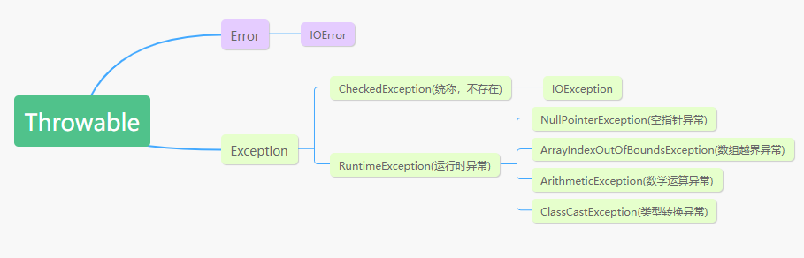
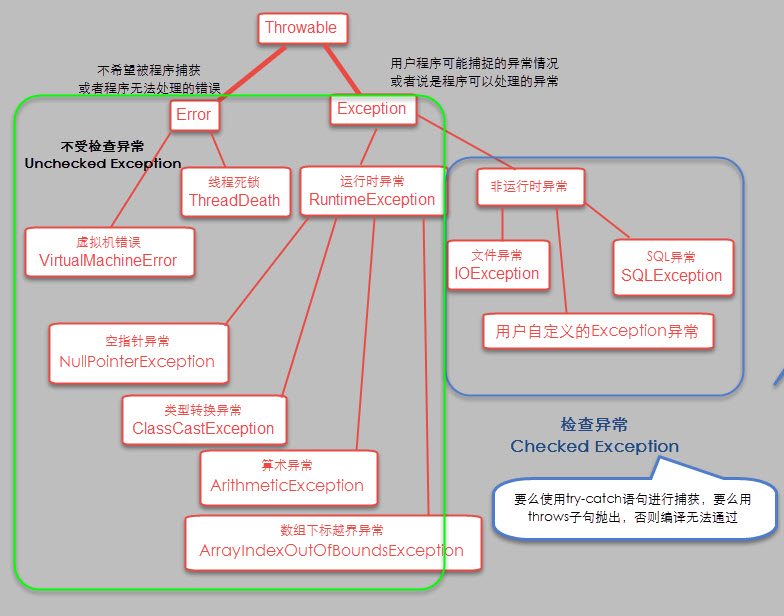
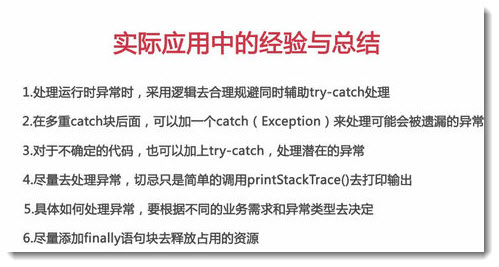

异常：就是程序运行过程中，出现了非正常的情况，异常也是错误的一种，但不是所有错误都是异常，异常会导致JVM非正常停止。
异常有的时候是因为用户错误引起，有的时候是程序错误引起的，还有的一些是其他原因导致的。
异常在java当中是以对象来处理的，异常的基类是：java.lang.Throwable
异常基类下有两个子类：java.lang.Error和java.lang.Exception，即上面所说的错误和异常。

上图列举了Throwable的主要分支和一些常见的异常。
注意：
Error和Exception的区别：Error通常是灾难性的致命的错误，是程序无法控制和处理的，当出现这些异常时，Java虚拟机（JVM）一般会选择终止线程；Exception通常情况下是可以被程序处理的，并且在程序中应该尽可能的去处理这些异常。
异常的分类，根据在编译时期还是运行时期检查异常可以分为两类：
注意：
除了RuntimeException以及其子类外，其他的所有Exception类及其子类都是检测异常，都是需要检查的，当出现这些异常时，要么使用
try-catch语句捕获异常，要么用throws语句抛出异常，否则编译无法通过。而RuntimeException，这类异常时不检测的，可以处理，但不一定会处理，一般不处理。
异常的处理本质上有两个：抛出异常和捕获异常。
简单点说：
抛出异常：就是自己不处理，向上抛出异常，由调用者去决定怎么处理。
比如方法中对参数做检测：
if (obj == null) {
throw new NullPointerException();
}捕获异常：就是自己捕获异常，并处理，处理捕获异常需要使用try-catch语句（下面会讲到)
异常处理的语法主要是五个关键字：try catch finally throw throws
try：用于监测，将可能产生异常的代码放到try语句块之中，当异常产生时，异常就会被抛出。
catch：用于捕获异常，catch用来捕获try语句块中抛出的异常。
finally：finally语句块的代码总是会被执行，主要是做一些清理（比如关闭打开了的文件句柄等），当try或catch语句块中有return语句或者throw语句，总是先执行完finally语句块，在返回执行try或catch中的return语句或throw语句，所以如果finally中使用了return或者throw等终止方法的语句，就不会再返回了，方法会直接停止，所以不能再finally中使用return或者throw
throw：用于抛出异常
throws：用于在方法声明中，声明该方法可能抛出的异常
捕获异常处理
try-catch语句处理
try {
// 可能发生异常的代码
} catch (Exception e) {
// 异常处理
} catch (Exception e) {
// 异常处理
}
...比如：
public class TryCacthTest {
public static void main(String[] args) {
try { // 当方法中产生异常时，必须要有处理，要么捕获，要么声明抛出
read("a.txt");
} catch (FileNotFoundException e) {
System.out.println(e);
}
}
// 有异常，编译期异常，检测异常
public static void read(String path) {
if (!path.equals("a.txt")) { // 假设文件名不是a.txt，认为是错误，抛出异常
throw new FileNotFoundException("文件不存在");
}
}
}如何获取异常信息？
答：在Throwable类中定义了一些查看方法，有以下三种：
public String getMessage()：获取异常的描述信息，错误原因public String toString()：获取异常的类型和异常的描述信息public String printStackTrace()：打印异常的跟着栈信息并输出到控制台一般在开发和调试阶段，都得使用printStackTrace，其包含了异常的类型，异常的原因，以及异常出现的位置。
try-catch-catch-...多个catch情况
有时候一个代码段可以引发多个异常，这种情况可以定义多个catch，对每一种类型的异常进行捕获，当异常发生时候，每个catch语句会依次检查，第一个匹配异常类型的catch语句执行，其他的所有catch语句不会再执行.
编写多个catch语句的注意事项：子类在前，父类在后。
try-catch-finally
同try-catch或try-catch-catch-...，唯一的不同就是finally语句块里的无论异常是否发生，都会执行，并且不能在finally中添加return。
抛出异常处理
使用throw抛出
具体语法：throw XXXException
如果throw语句在try块里，则会检查是否有匹配的catch语句，如果发现了有匹配的，则转向对应catch语句；如果没有发现，默认的异常处理程序则会中断程序，并且打印堆栈信息。
注意：程序执行完throw语句之后立即停止，throw后面的语句不会被执行。
比如：
class ThrowTest {
public static func() {
try {
throw new NullPointerException("Test");
} catch (NullPointerException e) {
throw e;
}
}
public static void main(String[] args) {
try {
func();
} catch (NullPointerException e) {
e.printStackTrace();
}
}
}
/*
程序中两次处理了异常，第一次，在main中调用func函数时候，抛出了异常，但func函数的try-catch捕获了这个异常，在catch里又一次抛出了异常，给到了调用者main函数，main里的try-catch进行了捕获，最后调用printStackTrace()
*/throws声明异常
如果一个方法可能产生一个异常，但本身不处理它，则必须在方法声明中使用throws声明异常，否则导致编译错误。
使用方法如下，如果存在多个异常，则用逗号隔开
public void func() throws Exception1,Exception2,...
注意：
关于throws抛出异常的规则如下：
- 如果是不检测的异常，即Error，RuntimeException或其子类，可以不用throws声明要抛出异常，也可以不用try-catch捕获，编译仍可以通过，但在运行时会被系统抛出。
- 对于检测的异常，要么用try-catch语句捕获，要么用throw抛出异常，再用throws声明异常，否则会导致编译错误。
- 当抛出了异常给调用者，调用者也无法处理异常时，必须要继续抛出，不能置之不理。
- 如果要覆盖一个方法，则声明的任何异常必须是被覆盖方法所声明的异常的同类或子类。
除了使用java内置的异常类外，还可以自定义异常，用户自定义异常，只需要继承Exception类即可
自定义异常，可以分为以下几个步骤：
比如：模拟注册操作，用户名存在，则抛出异常并提示
// 自定义异常
public class RegisterException extends Exception {
// 空参构造函数
public RegisterException() {
}
// 带参构造函数，message表示异常提示
public RegisterException(String message) {
super(message);
}
}public class Demo {
private static String[] names = {"Bill", "hello", "cddd"};
public static void main(String[] args) {
try {
// 可能出现异常的代码
checkUsername("nill");
System.out.println("注册成功");// 如果没有异常就是注册成功的
} catch (RegisterException e) {
// 处理异常
e.printStackTrace();
}
}
public static boolean checkUsername(String uname) throws RegisterException {
for (String name : names) {
if (name.equals(uname)) {
throw new RegisterException(name + "已经被注册");
}
}
return true;
}
}

参考文档：